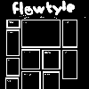

Welcome to my site!
Hi! My name's Flow and welcome to my website!
This will be my own personal website with cool stuff I like from the internet. Currently I only have the home page, an about me page, a blog, and a links page. I have a lot of ideas such as a chatroom, collections, shrines, etc. (look at to-do)
This website was made for computers in mind using firefox, a 1920x1080 monitor, and uses javascript. Programmed using VSCode using a static site generator called eleventy and nunjuck. If you're on mobile you might be cooked. Make sure you hard refresh (CTRL+SHIFT+R) to view new updates!
Local time:
recent blog posts
-
i got a vr headset! + christmas haul | 2025-01-07

merry christmas and happy new year everyone. ik it was a while ago but whatever. i've been sorting out job stuff (very unsuccessfully) and just enjoying the break using the stuff i got for christmas. speaking of christmas! i've gotten to the point now where i don't know what i want for christmas (until a week before). anything i would want are waaaay too expensive...
-
how i made this site | 2024-11-27
making a website is not hard at all. the hardest part is when u start but when you have a functional website, adding to it is very easy. in this blog post i'll share the process i did when making my mid website. first all go to neocities/nekoweb to pick a name for your website! you can change this anytime but it will break search engines and links...
-
webfishing | 2024-11-22
i've been playing a new game recently called webfishing! it's basically just a chatroom with a fishing minigame, and considering fishing minigames are the peak of games it's a genius idea. the objective of the game is to fish..... then u sell those fish and earn money to buy upgrades so u can fish bigger and better fish and get more money and more upgrades...
- view other posts
guestbook
updates
21/11/24 - moved some things, mainly the music player
23/11/24 - added an askbox and a gallery for my strawpage... also some space cat got here somehow... (also removed mouse glitter cause it was messing with UI :( )
21/11/24 - add piclog
19/11/24 - added to blog posts display, reorganised the home page, and added stuff im doing in about me
17/11/24 - added the blog
15/11/24 - migrated to 11ty, added sitemap, and new poll
05/11/24 - moved buttons to the footer. idk how to make it loop the end and the start
03/11/24 - joined wiiring and added an online counter
03/11/24 - added a links page! and changed some small things
30/10/24 - gave birth to fizzy
30/10/24 - (12am) made logo bounce and added music player. also added to do list
27/10/24 - launched site with new layout! also reset hit counter
to-do
- make a 88x31 button
- make different layouts for each page
- make cafe chat
- collections page of stuff i own (mostly games)
- join webrings and fanlistings (pikring, bucket webring, journalring)
- make shrines/pages of games i've played
- pokemon
- minecraft
- animal crossing?
- cat shrine?
- splatoon gear guide?